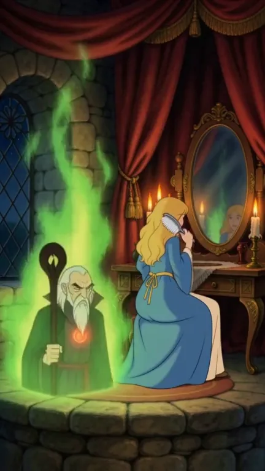
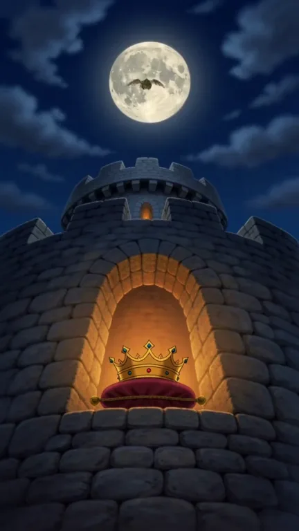
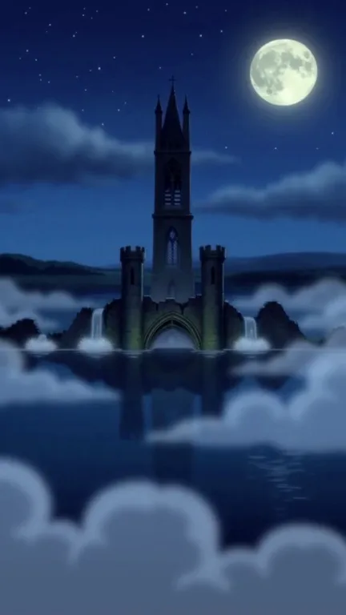
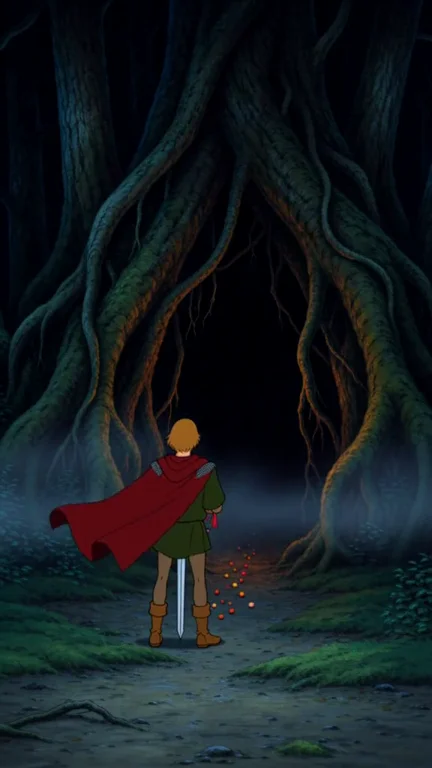
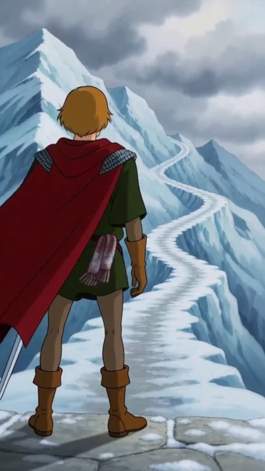
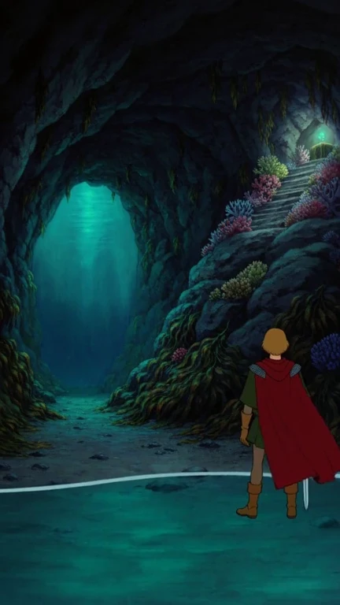
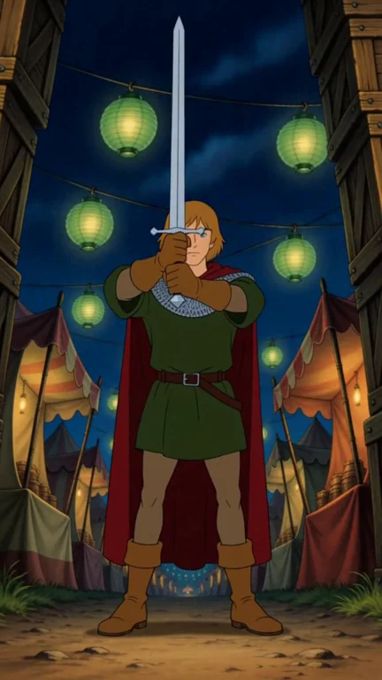
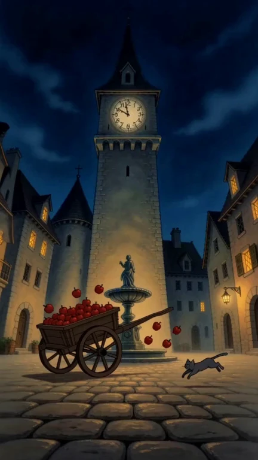
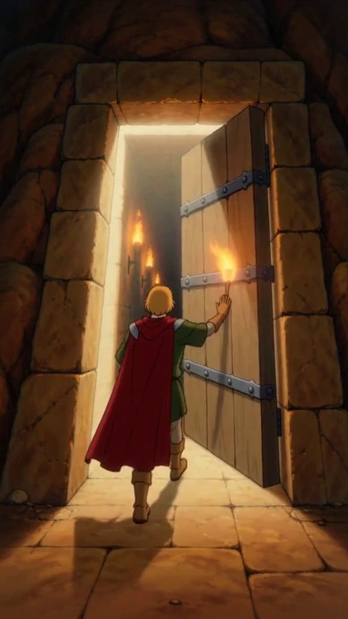

A Knight's Errand
The tale that began it all — a wizard, a stolen maiden, and a knight sworn to bring her home.

The Dragon's Hoard
The kingdom's crown lies under the chin of a sleeping dragon. Step softly, and steal it back.

The Bell of the Drowned Abbey
One night a year the abbey rises from the marsh, and its dead walk until the great bell is rung.

The Witch of the Tanglewood
The miller's daughter followed a trail of sweets into the wood, and the witch inside fights only by transformation.

The Winter Wyrm
A frost wyrm coils around the village's stolen sun-stone atop a glacier, freezing the valley harder each week.

The Siren's Grotto
At low tide, a storm-siren waits bound to a pearl on a coral altar, and the rising tide will seal the grotto shut.

The Goblin Fair
A midnight fair at the crossroads keeps a jar of stolen souls, and every game is rigged. Win three, or wear the collar forever.

The Clockmaker's Tower
The town clock has stuck one minute shy of midnight, and a brass automaton has jammed the works to keep it there. Every gear in the tower beats to his DING... DONG... — call it wrong, and climb no further.

The Minotaur's Labyrinth
Somewhere below, a Minotaur keeps his den among the bones of everyone who went in before. Find the chalice, then retrace your steps exactly — stray once, and he will find you.
The Canyon of the Sphinxes
Three Sphinxes rule a canyon of bones through their lying little courts. Read the fez colors carefully, find the true path, and reach open sky.